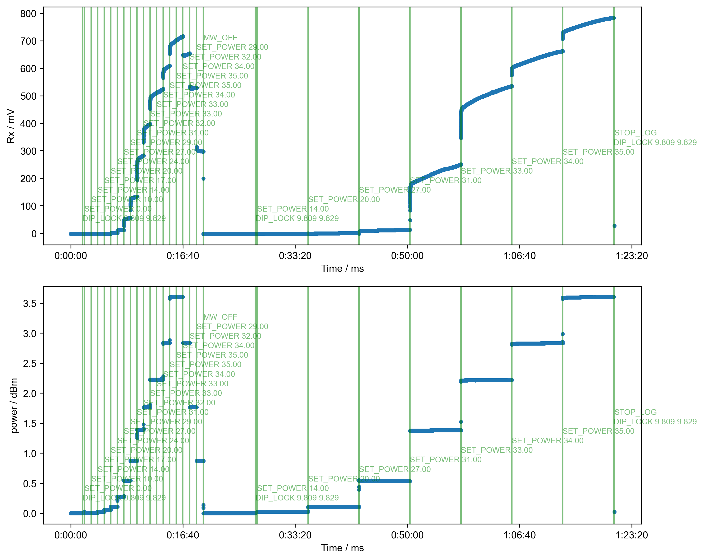

Note
Go to the end to download the full example code
Read Instrument Log¶
1: log figure
from pyspecProcScripts import logobj
import pyspecdata as psd
import h5py
import matplotlib.pyplot as plt
from matplotlib.transforms import blended_transform_factory
import datetime
coupler_atten = 22
myfilename = psd.search_filename(
"230626_batch230515_E37_Ras_B10_ODNP_1.h5",
exp_type="ODNP_NMR_comp/ODNP",
unique=True,
)
with psd.figlist_var() as fl:
# {{{ open h5 file to real log
with h5py.File(myfilename, "r") as f:
thislog = logobj.from_group(f["log"])
# }}}
# In order to properly set the time axis to start at 0
# both the log's start time will be subtracted from the
# the relative time recorded
thislog.total_log["time"] -= thislog.total_log["time"][0]
# }}}
# {{{ plot the output power and reflection
fig, (ax_Rx, ax_power) = plt.subplots(2, 1, figsize=(10, 8))
fl.next("log figure", fig=fig)
ax_Rx.set_ylabel("Rx / mV")
ax_Rx.set_xlabel("Time / ms")
ax_Rx.plot(thislog.total_log["time"], thislog.total_log["Rx"], ".")
ax_power.set_ylabel("power / dBm")
ax_power.set_xlabel("Time / ms")
ax_power.plot(
thislog.total_log["time"],
10
** (
(thislog.total_log["power"] + coupler_atten) / 10 - 3
), # -3 for mW to W
".",
)
# }}}
mask = thislog.total_log["cmd"] != 0
position = 0
npositions = 20
for j, thisevent in enumerate(thislog.total_log[mask]):
# {{{ Add a vertical line at the time the data acquisition for the
# set power began
event_name = thislog.log_dict[thisevent["cmd"]]
if event_name.lower().startswith("get_power"):
continue # ignore "get power" commands
position = (
position % npositions
) # use npositions positions top to bottom, then roll over
for thisax in [ax_Rx, ax_power]:
thisax.axvline(x=thisevent["time"], color="g", alpha=0.5)
thisax.text(
s=event_name,
x=thisevent["time"],
y=0.1 + (0.9 - 0.1) * position / npositions,
transform=blended_transform_factory(
thisax.transData, thisax.transAxes
),
alpha=0.5,
color="g",
size=8, # really tiny!
)
position += 1
# }}}
for thisax in [ax_Rx, ax_power]:
thisax.xaxis.set_major_formatter(
plt.FuncFormatter(lambda x, _: str(datetime.timedelta(seconds=x)))
)
plt.tight_layout()
Total running time of the script: (0 minutes 2.427 seconds)